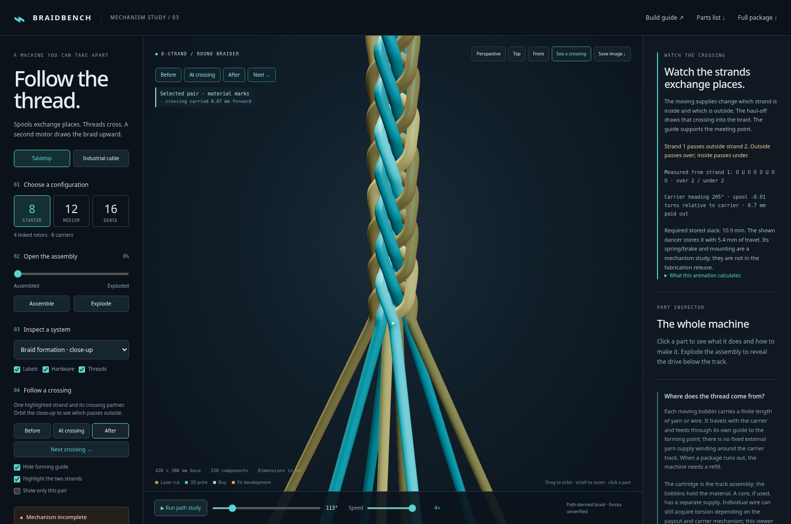

MECHANISM AUDIT / 12 OCTOBER 2026 / REVISION 03
Follow the crossing.
Keep the evidence visible.
The braid now has individual, finite-width strands from the supply to the compact output. Its crossing history, wire clearance and moving joins can be checked. The physical machine remains an unbuilt engineering study.
What you can now inspect
- Open “See a crossing”. All strands remain visible. The forming guide is hidden so it cannot cover the meeting point; the industrial cable core stays visible. “Before”, “At crossing” and “After” follow a measured event. “Next crossing” follows strand 1 to its next partner. Orbit to inspect which passes outside. “Show only this pair” and “Cut away cable core” are optional inspection controls.
- Follow a continuous strand. Each wire runs from its package through visible inlet guides, over a fixed return pulley, around a moving dancer and into its own output path. The tabletop inlet pulleys carry the feed below and outside its own loop. The industrial turning comb supports separate curved channels for the parallel ends. Near the camera, the wires are solid tubes. Tiny white surface marks follow the selected crossing as take-up carries it downstream.
- Inspect “Bobbin 1 · rotation”. The carrier and its off-axis guide turn along the prescribed track. The marked bobbin flange also turns relative to the carrier as material pays out. The industrial spindle, collar and support now connect the bobbin to its carrier.
- Watch the dancer. Changing guide positions change the free thread length. A two-leg loop stores surplus material without rewinding the bobbin. Its length changes by twice the moving pulley’s travel. The upper return pulley makes the complete route visible. Drag the speed bar from 0.25× to 4× without losing the current position.

How motion becomes a pattern
Two counter-travelling carrier families exchange between neighbouring four-pocket horn disks. Phased spur gears drive the horn disks. A carrier’s off-axis guide changes its position and orientation during this motion. Transfers are still prescribed mathematically: this animation does not calculate the forces or shoe contacts that would make a real carrier select the correct branch.
The actual guide paths supply a crossing history: the identity of every partner and whether each wire passes inside or outside it. The compact output is reconstructed from that history. An offline geometric calculation shortens the wire paths, regularises sharp bends and keeps finite wire diameters apart; the industrial version also clears the cable core. Its numerical weights are chosen for a readable, feasible shape. They are not measured yarn stiffness, friction or tension.
The exposed approach has its moving guides fixed at one end and that compact output fixed at the other. Its curves are reconstructed with the same finite-segment clearance constraints. Independent checks cover the stored poses and positions between them. Every individual wire’s cyclic partner and over/under sequence is compared with its actual guide path, including all 576 wires in the largest configuration.
All five supplied carrier loadings produce two over / two under carrier bundles. Each carrier crosses every opposing carrier twice per circuit. Eight parallel ends remain eight separate wires inside each bundle; they do not create eight independently travelling carriers. The 1 / 4 / 8 end settings use the same checked carrier-centre geometry and line pitch, so they change coverage rather than inventing a new pattern.
new material + change in free span = bobbin payout − change in stored slack visible loop length = constant + stored slack output at distance z = reconstructed path at (time − z / feed)
Take-up transports existing material vertices downstream. It does not repeatedly redraw a fresh helix. The repeated geometric cell carries an explicit carrier permutation, preserving each wire’s identity, colour and crossing partner across cell boundaries. Supply and output tubes share their joining ring so the forming point remains visible without an enclosing cover.
What the geometry checks establish
The tabletop close-ups use 0.45 mm diameter strands. The industrial model uses 0.16 mm wires, spaced 0.20 mm across each guide bank, around a 28 mm diameter core. Those are demonstration dimensions, not qualified material or manufacturing specifications.
Exact line-segment distance tests cover the deposited wire paths. The formation check bounds wire-to-wire and wire-to-core separation throughout each interpolation interval, with a 0.0003 mm numerical reserve. Additional sampled checks cover every supply wire and nonlocal self-crossings, and mesh checks look for folded surface triangles. The geometry report links the detailed results and hashes the exact profile assets. The method and reproduction notes describe what each test includes.
These checks establish geometric separation in this model. They do not establish a calibrated force equilibrium, material durability, friction, strand torsion, complete self-contact behaviour or a buildable carrier mechanism. Published work such as Del Rosso and colleagues’ braiding simulation uses material modelling and experimental comparisons; those measurements have not been performed for Braidbench.
Supply orientation and slack
The industrial guide bank pivots about its delivery axis to keep its parallel wires ordered. The route carries the bank around a rounded elbow and turns it progressively before the pulleys. A pivoting cylindrical guide-pulley frame has a real mechanism precedent in US4619180. The visible frame here is an original geometric study; that precedent does not validate its dimensions or bearings.
Payout uses a constant package radius and the length of the bundle’s neutral centreline. The independent route check accounts for the changing guide span and the visible slack loop. Individual ends share that payout estimate; differential stretch, slip, winding layers and torsion across a real multi-wire package are not calculated. The ideal spring/brake and pulley mounts still need detailed fabrication design.
What “bobbin rotation” means here
| Motion | What the viewer does | Evidence limit |
|---|---|---|
| Carrier turning along the track | The off-axis guide and arm visibly change orientation. The heading is continuous through handoffs. | A track shoe or another mechanism must physically enforce it. The current single round carrier pin cannot. |
| Spool turning on its spindle | A marked flange turns relative to the carrier by paid-out length / package radius. | Constant-radius package and ideal brake. Depletion and winding layers are not simulated. |
| Strands crossing one another | Measured guide crossings produce the output path and two-over/two-under repeat. | Finite-wire geometry and preserved topology; material forces remain uncalibrated. |
| Each wire twisting about its own length | Not calculated. | The model must not be used to claim twist-free wire delivery. |
The supply travels with its carrier, so no long feed from a stationary external yarn spool has to wind around the track. That explains the supply arrangement, not the torsion of the individual wire. The USPTO braiding classification, subclass 49, includes anti-twist mechanisms; individual-strand axial twist is therefore not a universal requirement for making a braid.
Corrected CAD interference
The previous guide post was only 9 mm from the bobbin centre and overlapped the flanges by 144 mm³. The corrected post sits 17 mm behind the prescribed carrier tangent on a new guide arm. Its offset upright leaves the tangent yarn approach open. The STEP, FreeCAD, GLB, STL and part list have been regenerated.
The earlier solid-intersection checks found zero overlap between the post, arm, bobbin and a 0.3 mm diameter payout path for all three configurations. Conservative moving-envelope checks also cover the guide against other bobbins and guides. That report predates the new route. The new source-route solid check uses 0.45 mm strands and conservative capsules around the complete path at maximum stored slack; it finds zero overlap with those three exported parts. Neither report qualifies other carriers, the new guide hardware, carrier-foot contact or fastening.
The extra gearing question
A conventional track-guided maypole has lower spur gears and upper horn disks. A shaped foot and track select the carrier route. This arrangement, including a bobbin brake and weighted slack take-up, is shown in a creator’s documented prototype and construction instructions. Those are mechanism precedents, not a validation of this CAD.
Additional carrier-rotation gearing also exists. US3783736A describes planetary gearing with cooperating retention and transfer hardware. A different architecture in US20170233908A1 uses counter-rotating circular orbits and timed strand-transfer arms. Neither architecture is silently substituted into this axial horn-disk study, and the particular industrial video recalled by the user has not been identified.
Bench experiments now available
The carrier guidance coupon tests a pointed shoe and a round control against actual crossing walls. At the crossing centre, the pointed shoe meets a wall after about 2.17° of rotation; the round control reaches 60°. Browser outline intersections agree with nominal CAD at 126 sampled poses. This is a straight-crossing constraint experiment, not a solution to the braider’s curved handoff.
The tension calibration board has laser/print files and adjustable ideal force and storage calculations. Forty millimetres of dancer travel stores 80 mm of material. All represented component pairs are checked across 41 slider positions, with zero nominal solid overlap. Friction, fastener detailing, brake regulation and a real assembly remain to be measured. See the development record and next tests.
Checks and remaining work
| Check | What it establishes |
|---|---|
| Animation continuity | All transfer boundaries and circuit seams for 8 / 12 / 16 / 48 / 72, including off-axis guides and carrier yaw. |
| Yarn history and accounting | Every carrier’s winding and crossing repeat; continuous non-reversing payout; length balance; transport of existing crossings; loop storage. No physical contact proof. |
| Wire geometry and topology | Individual crossing sequences, deposited segment clearances, continuous formation bounds, sampled supply clearances and tube surfaces. Exact assets and test scopes are recorded. |
| Rendered strand identity | Every repeated output cell retains the material identity of each wire, including GPU Float32 coordinates. |
| Close-up rendering | Loop-boundary pixel continuity, camera orbit and cutaway, solid wire tubes and guide-pulley selection. |
| Browser checks | Controls, offline loading, mobile layout and runtime behaviour. |
Still required for the complete model requested: a contact-constrained carrier shoe and transfer, completed brake/dancer/guide hardware matched to the exported CAD, full assembly interference checks, and calibrated material/contact validation. A physical handoff test and a braided sample are required before claiming the proposed build works. The viewer improvements do not close those engineering gaps.
Historical defect record
The earlier tabletop output was an independent fixed helix. The earlier industrial scene used invented scalloped paths and independently drawn helices. There was no independent bobbin payout. Those implementations, and the earlier deployment-ready assessment, are withdrawn. The subsequent narrow-annulus reconstruction also produced poor close-up packing. Revision 03 replaces it with compact geometric profiles, finite-wire clearance checks, explicit approach curves and solid inspection tubes.